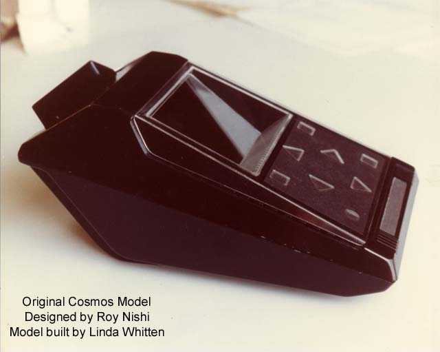
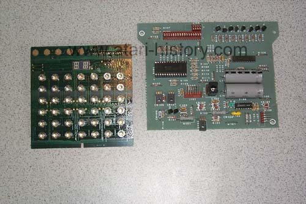
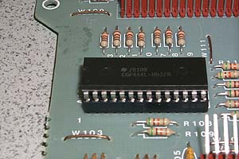
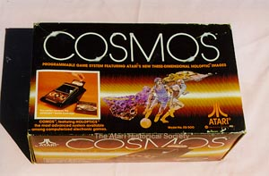
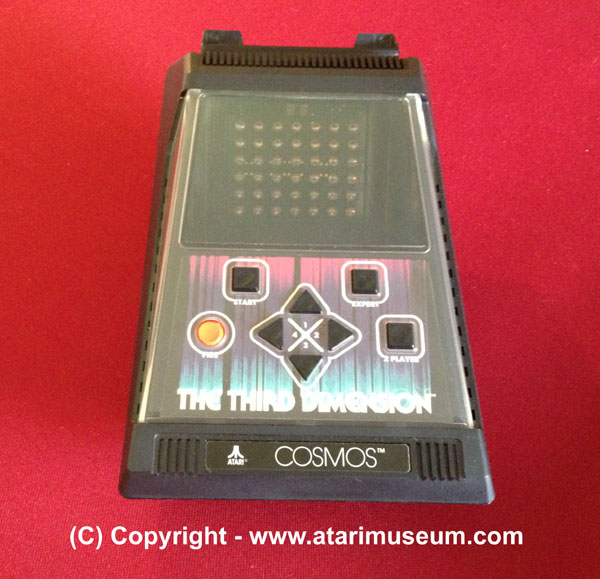
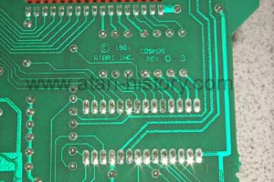
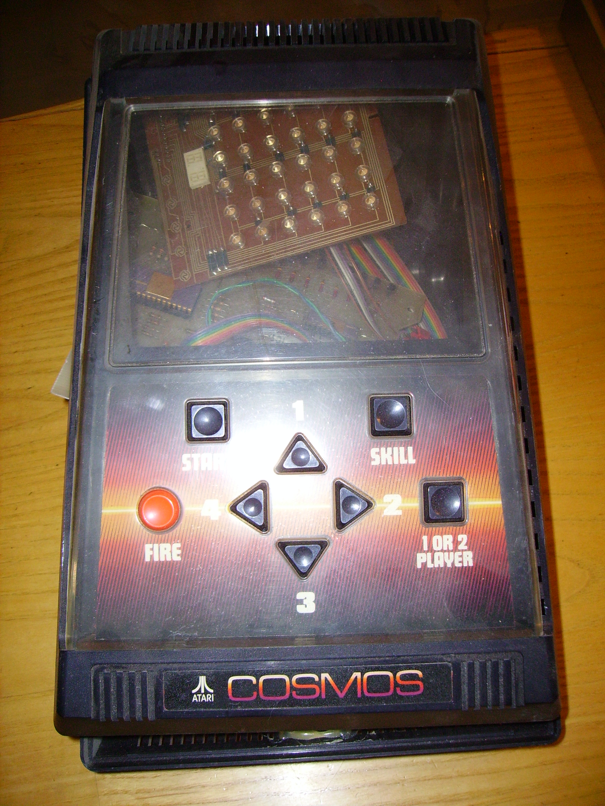

The Cosmos was Atari's experiment in holographic video gaming technology.
Atari purchased all the rights possible for anything to do with holography
and began work on a new tabletop based game which would have allowed 8
different games to work with 8 different holographic "backdrops".
The games were not actually 3-D holographic games, but moving LED's behind
a transparent holographic image to add more of an environment to the game
then just simply a bunch of flashing LED's on a screen such as handhelds
from Mattel Electronics and Coleco Electronics.


The Atari Cosmos used the the same CPU chip that was later used in the
Entex Adventurevision tabletop game. The chip was called the
COPS411. Each of the 8 Atari Cosmos game cartridge were "keyed"
so that they would press a combination of the 5 contact buttons located
on the LED board with a pattern of plastic keys on the back of each Atari
Cosmos game cartridge. Since the game cartridges only
consisted of a plastic shell, a set of contact keys and a transparent hologram
the price for each game was expected to cost as low as $10-$12 each.


The Atari Cosmos, the brainchild of Atari engineers Allan Alcorn, Harry
Jenkins and Roger Hector was shown at the New York Toy Fair in 1981.
Many observers commented that it wasn't really a 3-D holographic game and
the holographic slides were just a gimmick. Atari commented
that this was the first of its kind tabletop holographic video game and
that the use of the holograms in this fashion was a first attempt and that
the reviewers should not be so critical of the use of the holograms in
this way. However, interest in the new tabletop game
was quite high, in fact pre-orders taken at the show amounted to over 8,000
units from just the single showing.

From production line notes and engineering logs the Atari EG500 as the
notes refer to as had a pilot run of up to 250 units. Whether
that many units were ever made or not is known. Steve
Provence who worked for the holographic company that was subcontracted
by Atari to produce the holograms stated "While working at the Atari Holoptics
lab, there was a wall stacked with Cosmos cases and hardware, perhaps as
many as 1,000. When the money dried up and the lab was
closing, some people from Atari came in and hauled all of the hardware
away and then the lab closed." Product Boxes were
made, sales flyers were made and sent out to Atari's distributors in sales
paks, everything appears to look as if the Atari Cosmos was ready to go.
However the plug was pulled on the project and it was never mentioned again.
The only other use Atari made of its hologram technologies (Atari referred
to the technology as HOLOPTICS) was in the use of hologram stickers on
its cartridges and hardware to cutback on counterfeit products being sold.
Allan Alcorn who headed the Cosmos projected noted "Ray Kassar was too
scared to take a chance on the handheld/tabletop market, the Atari 2600
VCS was the only thing he had faith in." It was the pulling
of the plug on such innovative projects such as this that forced many of
Atari's most creative and innovative people to leave the company, Al Alcorn
left in 1981.


Very early development Prototype used
for marketing photo's.
{kind=link}
{kind=link}
{kind=link}